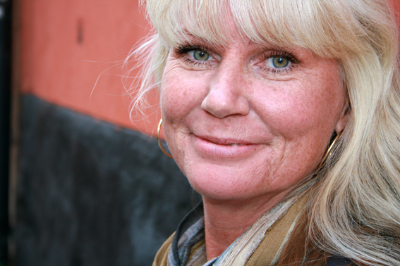

Syrene Hägelmark
Grundare
Processledare med passion för justa inkluderande processer. Min arbetsresa har rört sig genom frågor kring rasism, diskriminering, inkludering, samarbete och individ- och organisationsutveckling.
Läs merLäs mindre
● Fokus
Mitt stora intresse är hur människor och organisationer fungerar. I samspel med uppdragsgivaren planerar och genomför jag individ- och grupprocesser med fokus på förändring, utveckling, samspel och implementering. Frågor som är centrala är hur vi kan ta tillvara på människors kompetens, olikheter och potential utifrån organisationens uppdrag. Utgår från ett inkluderande förhållningssätt för att skapa de förändringar som behövs och önskas.
Jag arbetar med offentliga såväl som privata verksamheter i både korta som långa uppdrag. Till och från arbetar jag som direkt anställd hos uppdragsgivaren och delar då min tid mellan dem och Samarbetsbolaget.
● Arbetssätt och värderingar
- Hjärta, hjärna och kaktus (kaktus står för flera perspektiv, från motsättning till hållbarhet)
- Närvarande, autentisk och orädd
- Inkluderande, coachande och utmanande
- Lyhörd, analytisk – ser och uppmärksammar vad som finns under ytan
● Expertområden
- Utbildningar inom mångfald, ledarskap, konfliktförståelse, processledarskap och pedagogiskt drama
- Konstruktion och sammansättning av utbildningar samt ledarutbildning
- Fasta koncept: Förtroendefullt samarbete (Radical Collaboration), Intercultural Navigating, MOD (Mångfald och Dialog) samt THE (The Human Element)